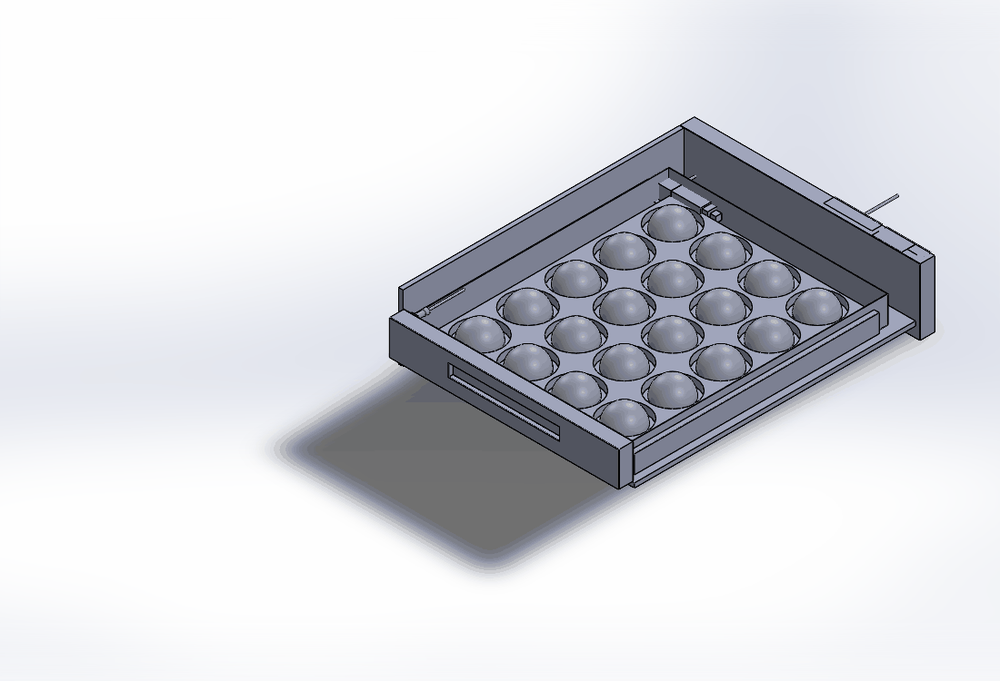
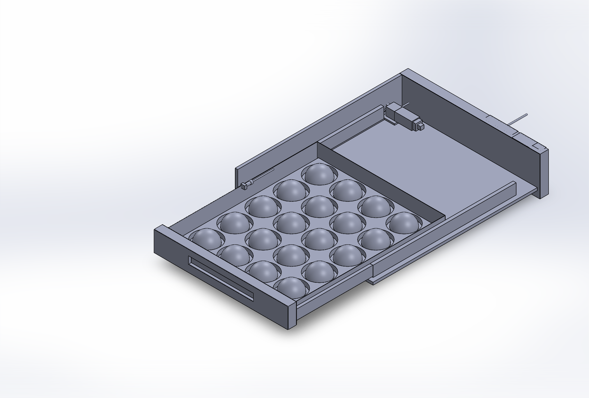

Her çekmece ana PC komutuyla kendi motoruyla açılır ve kapanır. Robot çekmeceyi çekmez; geldiğinde çekmece zaten açıktır. Kasada mekanizma yığını yok: motor, rayın devamına — çekmecenin arkasında kalan 57 mm boşluğa — oturur.

Tek çekmece tahrik detayı — motor, kayış, kablo ve sensör görünür (üst raf gizlendi)
1 · Nasıl çalışır · komut zinciri
Karar: ana PC (BEYİN) siparişe göre "taze çekmece 3'ten 1 hamur" der.
İletim: ana PC → Ethernet (Modbus TCP) → STORE panosundaki PLC. Çekmeceye komut gitmez, PLC'ye gider.
Sürme: PLC ilgili röleyi çeker → 24 V, o çekmecenin motoruna gider → motor kasnağı kayışı çeker → çekmece 700 mm açılır (≈ 3,7 sn).
Durma: motorun Hall enkoderi turu sayar; hedef konumda PLC röleyi keser. Sonsuz vida redüktör kendinden kilitlidir — akım kesilince çekmece kaydığı yerde durur.
Alma: PLC "çekmece açık" bilgisini PC'ye döner; robot ancak bu bilgiden sonra kolu sokar (çarpma emniyeti).
Kapanma: ters polarite ile motor çekmeceyi geri iter; kapandığını çekmecenin önündeki mıknatısı gören reed sensör doğrular. Sensör 2 sn içinde görmezse PLC alarm verir, hat durur.
Sıkışma: sürücü akımı eşiği aşarsa (parmak/kasa sıkışması) motor durur, o çekmece devre dışı kalır, kalan çekmecelerle çalışmaya devam edilir + eleman uyarısı.
2 · Hangi motor · hangi parçalar
Motor24 V DC redüktörlü, gövde Ø37 × 80 mm, sonsuz vida (kendinden kilitli), çıkış ≈ 120 d/dk · 5 N·mKonum geri bildirimiHall enkoder (motor arkasında) — tur sayarak konum; ayrı lineer cetvel yokHareket iletimikasnak Ø30 (çevre 94 mm) + GT3 6 mm kayış; kayış çekmecenin yan yüzündeki pabuca kenetliHız / süre188 mm/sn → 700 mm tam açılım 3,7 sn (yumuşak kalkış-duruş dahil ≈ 4,5 sn)Rayteleskopik tam açılım 700 mm, çift ray, 45 kg sınıfı (dolu 1 L çekmecesi 44 kg → 2 ray = 90 kg ✓)Kapalı doğrulamasıreed sensör Ø12 × 30 (kasada, söve iç yüzünde) + mıknatıs 15×8×3 (çekmece önünün iç yüzünde)Kablomotor başına tek M12 soket, 3 × 0,5 mm² (24 V +, −, enkoder). Soket kasada sabit → çekmece hareket ederken kablo oynamazKablo yoluarka sağ iç köşede dikey kanal 40 × 25 → üstte yatay kanal → klemens kutusuPano (üst teknik bölme)24 V 10 A güç kaynağı + PLC (Modbus TCP) + 2 × 8 kanal röle kartıGüçaynı anda tek çekmece hareket eder: 24 V × 2,5 A ≈ 60 W tepe; bekleme ≈ 5 WMotor sayısı17 (her çekmecede 1) — dolapta tek merkezi motor yok; tek motor + kavrama düzeneği daha karmaşık ve arızalı olurduAlançekmece 700 derin → kasa iç derinliği 757 → arkada kalan 57 mm motorun yeri. Boşa duran hacim yokMaliyetmotor + ray + kayış + sensör ≈ 180 €/çekmece → 17 × 180 ≈ 3.100 € + pano ≈ 400 €
3 · 3B model görüntüleri

Kesit detay: sağ arkada motor + redüktör + enkoder + M12 soket, kayış çekmeceye kenetli
Model: arastirma/1_STORE/STORE.SLDASM (174 bileşen) · detay: 1_STORE/detay2/CEKMECE_TAHRIK_DETAY.SLDASM. Motor, ray, kayış, kablo ve yuva tepsileri ortak parçadır — biri değişince tüm örnekleri değişir.
4 · Tedarikçiler · alternatifler
Ne
Marka / kaynak
Not
Motorlu teleskopik ray (hazır)
Accuride 3634E · Thomas Regout · Rollon
tak-çalıştır, 24 V, uç anahtarları dahil
24 V redüktörlü DC motor
Dunkermotoren · Bühler · Nidec · (TR distribütör)
sonsuz vida = kendinden kilitli
Kayış + kasnak
GT3 6 mm, standart
gıda ortamı, yağsız
Reed sensör
Ifm · Balluff · standart NO
Ø12, 24 V, IP67
PLC + röle kartı
Siemens LOGO! / Unitronics / endüstriyel PC I/O
Modbus TCP
5 · Soru işaretleri
#
Problem
Durum
Çözüm / not
T1
−18 °C bölmedeki 4 çekmecede motor/kayış
AÇIK
düşük sıcaklık gresi + IP67 motor; tedarikçiye −25 °C sürüm sorulacak
T2
Kayış gerginliği zamanla düşerse
ÖNERİ VAR
gergi makarası braketi (modelde var), 6 ayda bir bakım kalemi
T3
Sıkışma / parmak emniyeti
ÇÖZÜLDÜ
akım eşiği + yumuşak kalkış; dükkân tarafında çekmece yok, hepsi servis alanında
T4
Temizlik: kayış ve motor gıda alanında
ÖNERİ VAR
kayış hattı yan duvarda, ürünün altında değil; motor kutusu kapalı
T5
Elektrik kesintisinde çekmece açık kalırsa
ÇÖZÜLDÜ
sonsuz vida kilitli tutar; elektrik gelince PLC referansa döner (reed sensör)
6 · Sürüm geçmişi
v3 (8 Eyl): motor kasada sabit, kayışla tahrik, çekmece 700 derin — arkadaki 57 mm motora ayrıldı; detay montaj + animasyon
v2 (8 Eyl): hazır motorlu teleskopik ray kararı (kremayer-pinyon tasarımı iptal — fazla karmaşık)
v1 (8 Eyl): motorsuz seçenek (robot çeker) değerlendirildi — reddedildi, otomatik olacak
AUTOKITCH · HAT · Yol C canlı tasarım defteri · kaynak: arastirma/1_STORE · 8 Eyl 2026